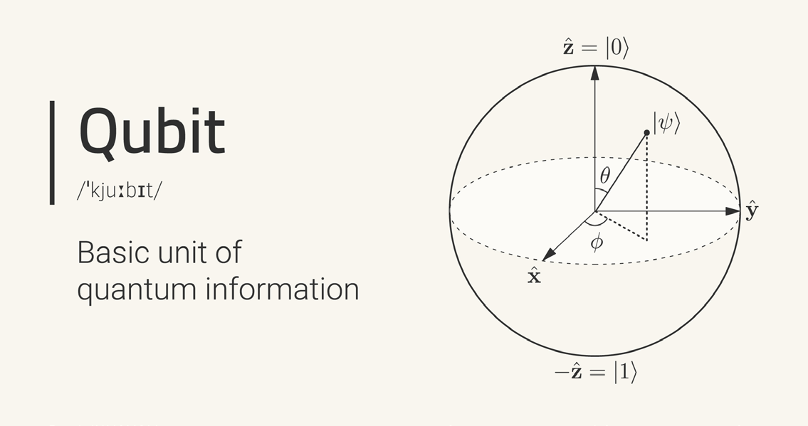
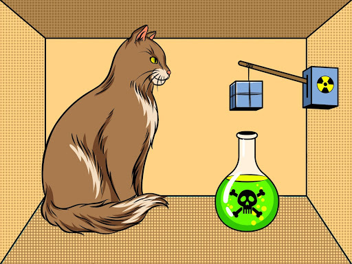
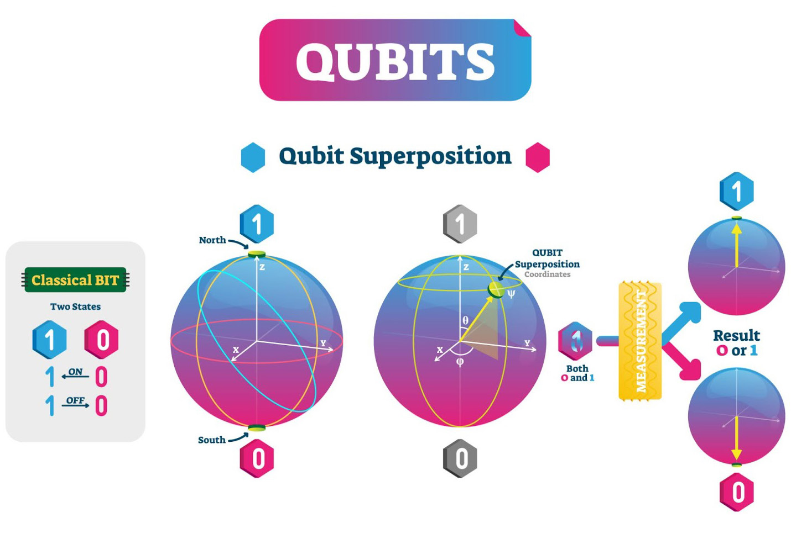
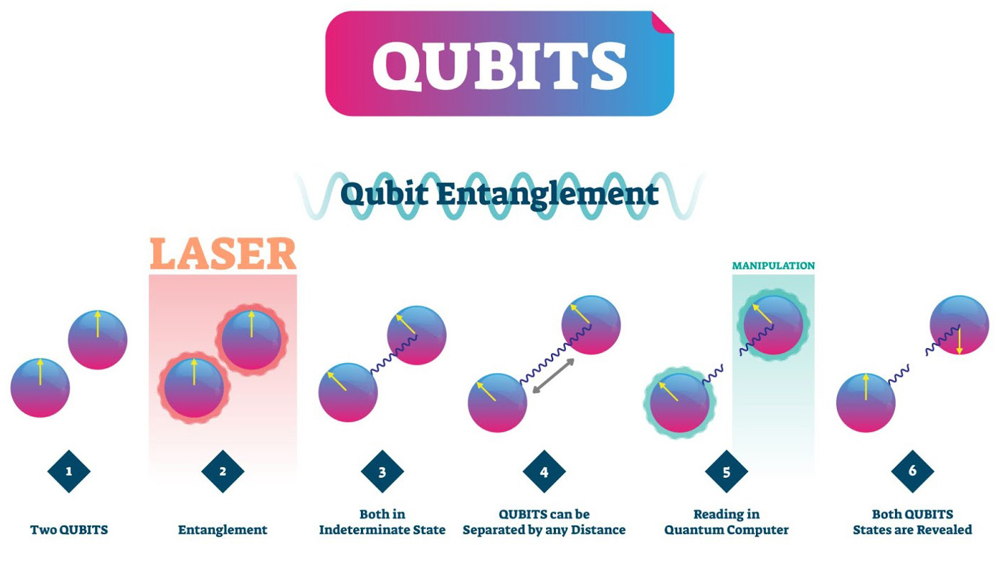
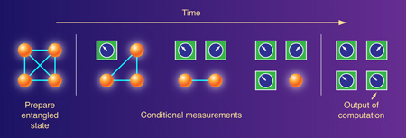
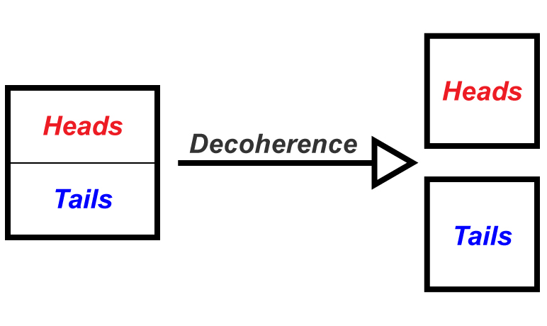
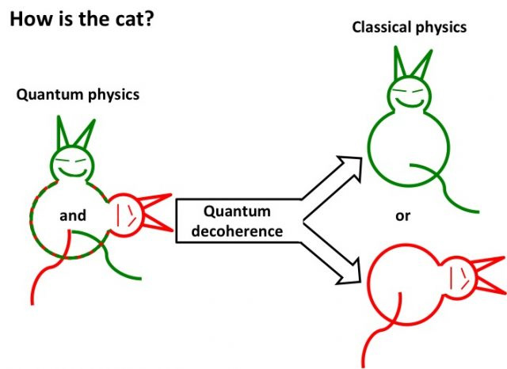

Four ideas carry most of the weight in quantum computing: the qubit, superposition, entanglement, and coherence. Get these four right and the rest of the field becomes readable. Get them wrong, or absorb them through the usual headlines, and almost everything that follows turns into mysticism. This chapter defines each term carefully, shows how the four relate, and corrects the popular misconceptions that tend to travel with them.
A useful framing before we start: a quantum computer is not a faster classical computer, and a qubit is not a smaller bit. The advantage of quantum hardware comes from a different way of representing and processing information, one governed by the linear algebra of quantum mechanics. Superposition lets a register hold a structured combination of many configurations at once. Entanglement creates correlations between qubits that have no classical counterpart. Coherence is the fragile resource that makes both possible, and decoherence is the clock that runs against every computation. The art of the field is doing useful work before that clock runs out.
A classical bit is the smallest unit of classical information. It takes one of two values, 0 or 1, and at any instant it is definitely one or the other. Every classical computer ever built, from a pocket calculator to a hyperscale data center, manipulates bits.
A quantum bit, or qubit, is the smallest unit of quantum information. Like a bit, it has two distinguishable basis states, written in Dirac notation as |0⟩ and |1⟩. Unlike a bit, a qubit can also occupy any normalized linear combination of those two states:
|ψ⟩ = α|0⟩ + β|1⟩
Here α and β are complex numbers called probability amplitudes, and they satisfy the normalization condition |α|² + |β|² = 1. The state |ψ⟩ is the qubit’s state vector. When the qubit is measured in the computational basis, it yields the outcome 0 with probability |α|² and the outcome 1 with probability |β|². Measurement is irreversible: after it, the qubit is left in whichever basis state was observed, and the original amplitudes are gone.
The physical realization of a qubit can be almost any two-level quantum system. The spin of an electron (up or down), the polarization of a single photon (horizontal or vertical), two energy levels of a trapped ion, or two quantized states of a superconducting circuit all serve. Chapter 5 covers these hardware platforms in detail. What matters here is the shared abstraction: a controllable, measurable two-state quantum system whose state can be a superposition of |0⟩ and |1⟩.

and |1> and angles theta and phi." />The Bloch sphere in Figure 3.2 is the standard geometric picture of a single qubit. Any pure state can be written, up to an irrelevant global phase, as
|ψ⟩ = cos(θ/2)|0⟩ + e^(iφ) sin(θ/2)|1⟩
and mapped to a point on the surface of a unit sphere using the two angles θ and φ. The basis states |0⟩ and |1⟩ sit at the poles, and every other point on the surface is a distinct superposition. Quantum gates, the operations a quantum computer applies to its qubits, are rotations of this sphere. This geometric view explains why a single qubit holds more than a single bit’s worth of orientation, yet still yields only one classical bit when measured.
The qubit count of a machine is the headline number you see in press releases, and it deserves a careful caveat. There is a large gap between a physical qubit (one piece of hardware) and a logical qubit (an error-protected, computationally reliable qubit built from many physical ones). In the early 1990s, David Deutsch and others pointed out that error correction would be unavoidable: a single physical qubit is far too noisy to act as a reliable qubit in a genuine computation, so each logical qubit would need to be encoded across many physical qubits. That overhead is real and large. Depending on the hardware error rate and the code, a single logical qubit can require hundreds to thousands of physical qubits. A claim of “1000 qubits” almost always means physical qubits, and the number of logical qubits available for a fault-tolerant algorithm is far smaller. Chapter 6 returns to error correction in depth.
Going Deeper - Why amplitudes, not probabilities
A natural question is why a qubit is described by complex amplitudes α and β rather than simply by two probabilities. The answer is interference. Because amplitudes are complex and can be negative or have phase, two computational paths that lead to the same outcome can add (constructive interference) or cancel (destructive interference). A quantum algorithm is essentially a choreography of amplitudes designed so that wrong answers cancel and right answers reinforce. A description in plain probabilities cannot cancel, which is exactly why a probabilistic classical computer (one that flips coins) does not get the quantum speedups. The phase φ on the Bloch sphere is not bookkeeping. It is where the computational power lives.
Superposition is the principle that a quantum system can exist in a combination of its basis states until it is measured. For a single qubit, superposition is exactly the α|0⟩ + β|1⟩ state introduced above, with both α and β nonzero. The qubit is not secretly 0 or 1 with us merely ignorant of which. It is in a definite quantum state that is genuinely a blend of both, and measurement is what forces a single classical outcome.
The most familiar popular illustration is Schrödinger’s cat, sketched in Figure 3.3. Erwin Schrödinger’s 1935 thought experiment imagined a cat in a sealed box with a radioactive atom, a detector, and a vial of poison. If the atom decays, the poison is released. Quantum mechanics says the atom is in a superposition of decayed and not-decayed, so, taken literally, the cat is in a superposition of alive and dead until the box is opened. Schrödinger meant this as a provocation about how strange it is to scale quantum behavior up to everyday objects, not as a literal claim about cats. The useful lesson for computing is narrower and cleaner: a qubit, like the atom, can hold two possibilities at once, and the act of measurement resolves them.

A cleaner physical example than the cat is a single electron in an atom. The electron might occupy the lowest energy level (the ground state) or a higher level (an excited state). If it is prepared in a superposition of these two states, it has some probability amplitude of being found in the lower state and some of being found in the upper state, simultaneously, until a measurement checks. This is the kind of two-level system that real qubits are built from, and it carries none of the macroscopic baggage of the cat.

The computational payoff is often summarized as “a quantum computer tries all answers at once,” which is true in a carefully qualified sense and badly misleading in the usual sloppy one. Two qubits in superposition span four basis states, |00⟩, |01⟩, |10⟩, and |11⟩, and a register of n qubits can hold a superposition over all 2^n basis states at the same time. The amplitudes across that exponentially large set of configurations do evolve together when a gate is applied, which is the sense in which the machine processes many configurations in parallel.
The crucial caveat: you cannot read out all 2^n amplitudes. A measurement returns just one n-bit string, chosen at random according to the squared amplitudes, and the rest of the information collapses away. Quantum speedup therefore does not come from naive parallelism. It comes from using interference (the Going Deeper box in Section 3.1) to concentrate amplitude on the answers you want before you measure. Superposition supplies the raw breadth; interference is what turns breadth into a usable answer. Algorithms that fail to arrange this interference get no advantage at all.
Entanglement is a correlation between two or more qubits that is stronger than anything possible in classical physics, and it is the second pillar of quantum computational power. Two qubits are entangled when their joint state cannot be written as a product of two independent single-qubit states. The pair has a definite collective state, but neither member has a state of its own.
The canonical example is one of the Bell states:
|Φ⁺⟩ = (1/√2)(|00⟩ + |11⟩)
Read this carefully. The two qubits are either both 0 or both 1, with equal probability, and never one of each. Yet before measurement neither qubit is individually 0 or 1. If you measure the first qubit and get 0, the second is instantly determined to be 0 as well; if you get 1, the second is instantly 1. The outcomes are perfectly correlated even though each individual outcome is perfectly random.

The property that captures the public imagination is distance independence. Entangled qubits stay correlated no matter how far apart they are carried. Put one qubit in San Francisco and its partner in New York, measure the spin of one, and the measurement of the other along the same axis is determined in the same instant. Einstein famously called this “spooky action at a distance” and was deeply uncomfortable with it. Experiments over the past several decades, culminating in the loophole-free Bell tests that earned the 2022 Nobel Prize in Physics, have confirmed the correlations are real and cannot be explained by any local hidden-variable theory [1].
A necessary clarification, because the popular framing gets it wrong constantly: entanglement does not transmit information faster than light. The measurement outcome on each side is random. The San Francisco observer sees a random result and the New York observer sees a random result, and only by later comparing notes through an ordinary (light-speed-limited) channel can they confirm the results were correlated. No message, no signal, no usable information crosses the gap instantaneously. Relativity is safe. What entanglement provides is correlation without communication, and that is the resource quantum computers exploit.

Inside a quantum computer, entanglement is what makes the 2^n-dimensional state space genuinely useful rather than just large. Without entanglement, n qubits in superposition would behave like n separate coins and could be simulated efficiently on a classical machine. Entanglement weaves the qubits into a single correlated object whose description grows exponentially, which is precisely why a classical computer struggles to simulate it and why a quantum computer can outpace one. The concept has no analog in classical mechanics. It is, more than any other single idea, the thing that makes quantum different.
Going Deeper - Correlation is not control
A persistent misconception is that measuring one entangled qubit lets you “set” the other, like a remote switch. It does not. The outcome of your measurement is random and outside your control, so all you do is learn the correlated value of the partner, not choose it. This is the precise reason entanglement cannot be used for faster-than-light signaling. The no-communication theorem makes this rigorous: no operation on one half of an entangled pair can change the measurement statistics observed on the other half. Entanglement is a shared correlation established when the qubits interacted in the past, not a live channel between them in the present.
Coherence is the property that makes superposition and entanglement usable, and decoherence is its loss. A quantum system is coherent when a definite, well-defined phase relationship holds among its component states, the e^(iφ) factor on the Bloch sphere being the simplest example. That phase relationship is what allows interference, and interference is what powers quantum algorithms. Preserve coherence and the computation behaves quantum mechanically. Lose it and the system reverts to ordinary classical statistics.
Decoherence is the loss of that phase relationship through unwanted interaction with the environment. Quantum computers are extraordinarily fragile. A stray vibration, a thermal photon, a fluctuating magnetic field, or a single cosmic ray can disturb the qubits enough to scramble their phases. When that happens, the delicate superposition leaks information into the surroundings, the well-defined phases wash out, and the quantum behavior is gone.

It helps to be precise about what decoherence is and is not. Decoherence does not, by itself, cause a literal wave-function collapse. Rather, it provides a framework that explains apparent collapse: as the quantum nature of the system leaks into the environment, the system transitions into a statistical mixture of states that looks, to any observer, like the definite classical outcomes we actually perceive. This is why an isolated quantum system, perfectly shielded from everything, would in principle keep its coherence indefinitely, yet would also be useless, because a system you can never touch is a system you can never program or read. Every act of control and every act of measurement couples the qubit to the outside world, and every such coupling is an opportunity for decoherence.

The practical consequence is a hard time budget. Two timescales describe how long a qubit stays usable. T1, the relaxation time, measures how long a qubit holds energy before decaying from |1⟩ toward |0⟩. T2, the dephasing time, measures how long the phase relationship survives, and it is the one most directly tied to coherence. Coherence times vary widely by platform, from microseconds in early superconducting qubits to seconds or longer in well-isolated trapped-ion and nuclear-spin systems [2][3]. Every quantum gate takes time, so the number of operations you can perform before decoherence corrupts the state is roughly the coherence time divided by the gate time. That ratio, not the raw qubit count alone, sets what a machine can actually compute.
Because decoherence is unavoidable, the field does not try to eliminate it outright. The strategy is twofold: suppress it through extreme isolation (dilution refrigerators near absolute zero, magnetic shielding, vibration isolation, ultra-high vacuum), and correct what remains through quantum error correction. Error correction spreads one logical qubit’s information across many physical qubits so that the disturbance of any few can be detected and reversed before it spoils the result. This is the direct link back to Section 3.1: the reason a logical qubit costs so many physical qubits is precisely that coherence is scarce and decoherence is relentless. Chapter 6 develops the full machinery.
Going Deeper - The decoherence clock and the threshold theorem
The reason error correction is worth its enormous overhead is the quantum threshold theorem. It states that if the physical error rate per gate can be pushed below a certain critical threshold (often quoted, code-dependent, in the neighborhood of 1 percent), then arbitrarily long quantum computations become possible by adding more physical qubits per logical qubit. Below the threshold, errors are corrected faster than they accumulate. Above it, adding qubits makes things worse. Much of experimental quantum computing in the 2020s has been a race to get physical error rates comfortably under threshold and then demonstrate that a logical qubit, built from many physical ones, actually outlives its constituents. Reaching and beating that threshold is what turns the decoherence clock from a wall into a manageable cost.
BNC in Practice - Stable references for fragile systems
Quantum hardware is only as good as the classical signals that drive and time it. Superconducting and trapped-ion qubits are controlled by precisely shaped microwave and RF pulses, and the fidelity of every gate depends on the phase stability, low jitter, and clean spectral purity of those control signals. Timing instability in the control electronics shows up directly as dephasing in the qubits, eating into the coherence budget described above. Berkeley Nucleonics builds the kind of low-noise signal generators, precision timing instruments, and frequency references used in demanding RF and timing environments; teams building or characterizing quantum control stacks should evaluate specific instruments against their own phase-noise and timing requirements. Verify any model selection and its specifications against the current BNC datasheet before relying on it for a coherence-critical application.
Take it interactively. The quiz lives on its own page with hidden answers - write your attempt first (even four characters works), then reveal. Self-graded. About 10 minutes.
Or read the questions and answers inline below (preserved for print and offline use).
[1] The Nobel Prize in Physics 2022, awarded to Alain Aspect, John F. Clauser, and Anton Zeilinger for experiments with entangled photons establishing the violation of Bell inequalities. Nobel Foundation. Verify before publication.
[2] M. Kjaergaard et al., “Superconducting Qubits: Current State of Play,” Annual Review of Condensed Matter Physics, vol. 11, pp. 369-395, 2020. Verify before publication.
[3] C. D. Bruzewicz, J. Chiaverini, R. McConnell, and J. M. Sage, “Trapped-Ion Quantum Computing: Progress and Challenges,” Applied Physics Reviews, vol. 6, 021314, 2019. Verify before publication.
[4] D. Deutsch, “Quantum theory, the Church-Turing principle and the universal quantum computer,” Proceedings of the Royal Society of London A, vol. 400, pp. 97-117, 1985. Verify before publication.
[5] M. A. Nielsen and I. L. Chuang, Quantum Computation and Quantum Information, 10th Anniversary Edition, Cambridge University Press, 2010. Verify before publication.